RECEIVE-CONTROL-1.1 — receiving as authored actions with a rigid-body ball and Ball Control execution
18 Oct 2026 · prototype/dribble-1 · beside the frozen DRIBBLE-V1 (tag dribble-v1-foundation-1, unchanged) · local review page (real player names) · full report review_artifacts/receive11/RECEIVE11_REPORT.md · animation contract RECEIVE11_ANIMATION_CONTRACT.md
- Receive contact made in 675 of 714 runs (RECEIVE-CONTROL-1: 463); never touched 39 (5 %) (RECEIVE-CONTROL-1: 213); clean 583 (82 %) (RECEIVE-CONTROL-1: 279). Of the ordinary receives only 2 miss outside rear passes into space.
- No braking for contact geometry: ordinary receivers above 4 m/s keep a median 94 % of their speed at the contact (99 % for passes from the front and front sides; side passes aimed behind the runner force a check).
- CPU of the receive phase: 8.8 ms per simulated second (16.4 ms per receive) — RECEIVE-CONTROL-1: 816 ms/s and ≈ 1.3 s per receive.
- Ball Control governs execution: BC 99 nearly exact (median direction error 0.3°), BC 40 wide and heavy (4.9°, p90 27.2°); losses emerge from the rigid-body result.
I cannot play video in real time: every judgement here comes from frame strips and stills. Each case: the gameplay camera 2.6× with the receive debugger panel (1×), the close top view with the debugger arrows (0.5×: incoming ball vector light blue, facing white, desired exit yellow dashed, CONTACT ring, IDEAL first touch orange dashed, ACTUAL first touch red, BALL FIRST-TOUCH VECTOR vs PLAYER FINAL EXIT VECTOR green, the reconnection point, the standing foot, the planned body rotation arcs, the handoff), and a clean close side view (0.25×). The body is a procedural placeholder for authored animation.
Review cases
A — kill receive (Ball Control 99) · F_0_STAND_MED_KILL_BC99
A standing receiver squares up to a 7.2 m/s pass from the front and takes it on the inside of the right foot turned out; the foot gives with the ball. The touch leaves at 1.19 m/s (ideal 1.18) and the ball is dead 0.41 m in front of his feet 0.61 s later; he holds it.
CUSHION · R INSIDE · contact 1.43 s · hold · incoming 7.2 m/s · body 0.0 → 0.5 m/s at the contact · rotation 0.0° before / 0.0° after · ideal touch 1.2 m/s at -83.4° (-83.4° from the exit) · executed 1.2 m/s, error -1.4° / +0.01 m/s (BC 99, D 1.21) · KILLED
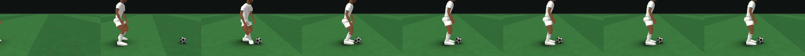
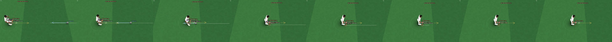
B — touch into stride at 5.5 m/s (Ball Control 99) · FL_0_RUN_MED_BC99
A pass from the front-left to a runner who keeps going straight: 5.5 → 5.27 m/s at the contact (96 %) → 5.5 at the handoff. The right inside pushes the 8.6 m/s pass forward at 8.3 m/s, 0.8° off the ideal; the ball is on his line 1.3 m ahead at the handoff and DRIBBLE-V1 carries on.
STRIDE · R INSIDE · contact 1.02 s · handoff 1.45 s · incoming 8.6 m/s · body 5.5 → 5.3 m/s at the contact → 5.5 at the handoff · rotation 0.0° before / 0.0° after · ideal touch 8.5 m/s at 0.4° (0.4° from the exit) · executed 8.3 m/s, error +0.8° / -0.20 m/s (BC 99, D 1.32) · CLEAN
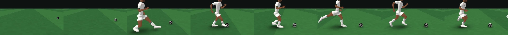
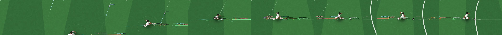
C — 90° turning receive · F_90_RUN_MED_BC99
A pass from the front, exit 90° right. The body opens 40° before the contact while braking to 1.8 m/s (TURN-1's angle–velocity trade-off), the right laces push the ball out at 82° (7.5° from the exit), the body turns the remaining 50° and leaves at 4.2 m/s with the ball on its line — one action, no stop.
OPEN_TURN · R LACES · contact 0.99 s · handoff 1.66 s · incoming 8.7 m/s · body 5.5 → 1.8 m/s at the contact → 4.2 at the handoff · rotation 40.5° before / 49.5° after · ideal touch 5.7 m/s at 82.5° (-7.5° from the exit) · executed 5.7 m/s, error +0.3° / +0.05 m/s (BC 99, D 1.42) · CLEAN
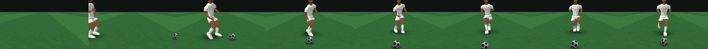
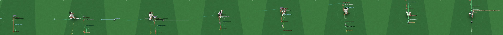
D — 135° large turn: the intermediate ball vector · FR_135_RUN_MED_BC99
A pass from the front-right, exit 135° right. The far (left) foot's inside sends the ball out at 125° — an intermediate vector 10° short of the exit, toward the point where he will rejoin it — while the body rotates 30° before and 105° after the contact and emerges on the 135° line with the ball 1.6 m ahead.
THROUGH_TURN · L INSIDE · contact 1.14 s · handoff 1.83 s · incoming 8.2 m/s · body 5.5 → 3.0 m/s at the contact → 3.2 at the handoff · rotation 29.7° before / 105.3° after · ideal touch 4.6 m/s at 125.4° (-9.6° from the exit) · executed 4.3 m/s, error +0.4° / -0.30 m/s (BC 99, D 1.48) · CLEAN
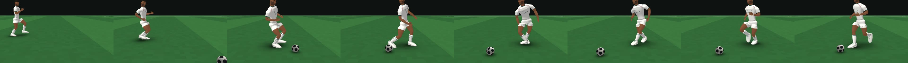
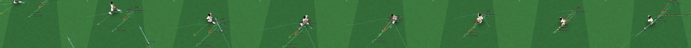
E — through-stance turn (Gravenberch-like): 120° left, right-foot inside · F_240_JOG_MED_BC99_WF5
A pass from the front, exit 120° left. The left (standing) foot plants beside the ball's line, the right foot's inside sends the ball back-left at −113° across the stance while the body rotates on the standing foot (−26° before, −94° after the contact) and steps round onto the −120° line; the ball is 1.7 m ahead on it at the handoff.
THROUGH_TURN · R INSIDE · contact 1.07 s · handoff 1.76 s · incoming 8.4 m/s · body 3.0 → 2.3 m/s at the contact → 3.5 at the handoff · rotation -26.4° before / -93.6° after · ideal touch 5.1 m/s at -112.8° (7.2° from the exit) · executed 5.0 m/s, error -2.3° / -0.09 m/s (BC 99, D 1.26) · CLEAN
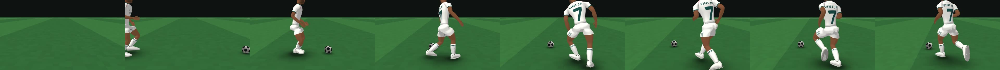
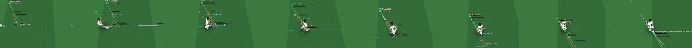
F — the mirrored turn: 120° right, left-foot inside · F_120_JOG_MED_BC99_WF5
E mirrored by the action system: the left foot's inside at +113°, the right foot standing, the body +26° / +94°; the same contact and handoff ticks (two-footed player — with his right foot preferred the matrix player chooses an open turn with the right foot here instead).
THROUGH_TURN · L INSIDE · contact 1.07 s · handoff 1.76 s · incoming 8.4 m/s · body 3.0 → 2.3 m/s at the contact → 3.5 at the handoff · rotation 26.4° before / 93.6° after · ideal touch 5.1 m/s at 112.8° (-7.2° from the exit) · executed 5.0 m/s, error -2.3° / -0.09 m/s (BC 99, D 1.26) · CLEAN
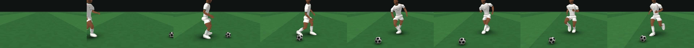
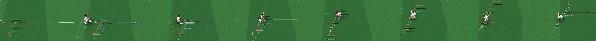
G — 180° turn · F_180R_JOG_MED_BC99
A pass from the front to a jogger who wants to go back. He opens 60° before the ball arrives, the right inside sends it back at −171° (10° from the exit) and the body completes the remaining 120° while accelerating out — no dead stop, no stationary pivot; the ball is 1.8 m ahead on the new line at the handoff.
OPEN_TURN · R INSIDE · contact 1.07 s · handoff 1.74 s · incoming 8.4 m/s · body 3.0 → 2.6 m/s at the contact → 3.1 at the handoff · rotation 60.0° before / 119.5° after · ideal touch 4.3 m/s at -170.9° (9.6° from the exit) · executed 4.2 m/s, error -2.2° / -0.08 m/s (BC 99, D 1.20) · CLEAN
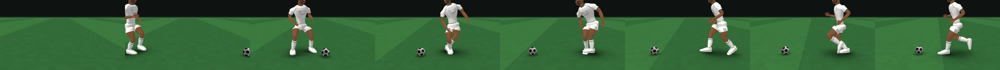
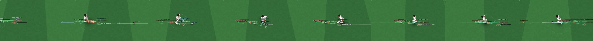
H — full throttle: 7.8 m/s in stride · F_0_FAST_MED_BC99
A pass from the front to a runner at 7.8 m/s: 7.77 m/s at the contact, an 11.7 m/s push into his stride with the right inside, 7.8 m/s at the handoff and after.
STRIDE · R INSIDE · contact 0.73 s · handoff 1.11 s · incoming 9.5 m/s · body 7.8 → 7.8 m/s at the contact → 7.8 at the handoff · rotation 0.0° before / 0.0° after · ideal touch 11.7 m/s at 0.3° (0.3° from the exit) · executed 12.1 m/s, error +1.2° / +0.35 m/s (BC 99, D 1.60) · CLEAN
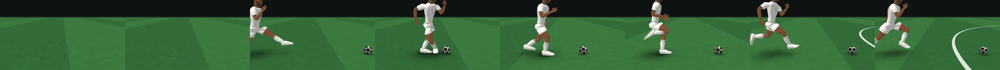
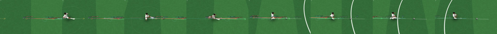
H′ — full throttle: a 90° turn from 7.8 m/s · F_90_FAST_MED_BC99
The turn cost is real: the body brakes to 4.3 m/s for the open-body turn, the right laces take the ball 20° short of the exit toward the reconnection point, and he leaves at 4.2 m/s, back to pace through the exit ramp.
OPEN_TURN · R LACES · contact 0.83 s · handoff 1.50 s · incoming 9.2 m/s · body 7.8 → 4.3 m/s at the contact → 4.2 at the handoff · rotation 40.5° before / 49.5° after · ideal touch 5.8 m/s at 70.1° (-19.9° from the exit) · executed 5.7 m/s, error +1.4° / -0.17 m/s (BC 99, D 1.47) · CLEAN
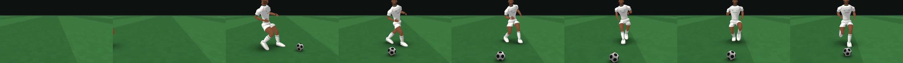
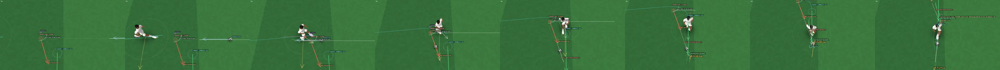
I — poor Ball Control: B's receive at BC 50 · FL_0_RUN_MED_BC50
The same situation, intent and action as B. Executed 10.7° wide and 2.2 m/s short; the ball is 0.65 m ahead and 0.18 m off his line at the handoff, he runs onto it and loses it.
STRIDE · R INSIDE · contact 1.02 s · handoff 1.45 s · incoming 8.6 m/s · body 5.5 → 5.3 m/s at the contact → 5.5 at the handoff · rotation 0.0° before / 0.0° after · ideal touch 8.5 m/s at 0.4° (0.4° from the exit) · executed 6.3 m/s, error +10.7° / -2.18 m/s (BC 50, D 1.32) · TAKEN
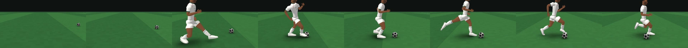
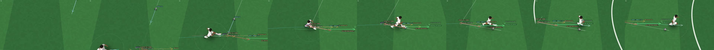
J — failed / heavy receive (BC 45, seed 4) · F_240_RUN_MED_BC45
E's action at running pace, selected correctly (through-stance, right inside). Executed +16° and +3.1 m/s heavy: the ball goes out at 8.2 m/s, 3.4 m from where it was meant to be when he arrives on his line; the action does not chase it and the ball is lost.
THROUGH_TURN · R INSIDE · contact 0.98 s · handoff 1.68 s · incoming 8.7 m/s · body 5.5 → 3.0 m/s at the contact → 3.5 at the handoff · rotation -26.4° before / -93.6° after · ideal touch 5.0 m/s at -109.0° (11.0° from the exit) · executed 8.2 m/s, error +16.4° / +3.13 m/s (BC 45, D 1.28) · RECEIVED
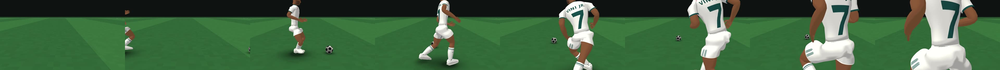
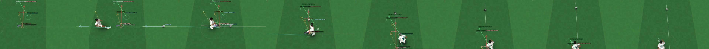
Matrix — 714 runs (RECEIVE-CONTROL-1's 238 situations × 3 seeds, Ball Control 89)
| clean | taken | received | recovered | no contact | |
|---|---|---|---|---|---|
| RECEIVE-CONTROL-1 | 279 | 27 | 157 | 38 | 213 |
| RECEIVE-CONTROL-1.1 | 583 | 83 | 9 | 0 | 39 |
Clean: a receive contact, the new line within 2.5 s, the ball controlled at the end. Taken: the new line, not controlled at the end (79 of them: DRIBBLE-V1 never touches a ball on the line ≈ 1.4 m ahead — its own takeover gap, see the report §15). No contact: 19 actions whose contact falls after the 4 s run (balls into space), 20 with no feasible action.
By receiveTurnAngle
| n | contact | clean | taken | received | recovered | missed | |
|---|---|---|---|---|---|---|---|
| 0 | 120 | 120 | 111 | 9 | 0 | 0 | 0 |
| 45 | 21 | 21 | 19 | 2 | 0 | 0 | 0 |
| 89 | 42 | 36 | 29 | 7 | 0 | 0 | 6 |
| 90 | 132 | 123 | 106 | 15 | 2 | 0 | 9 |
| 120 | 21 | 21 | 19 | 2 | 0 | 0 | 0 |
| 135 | 21 | 21 | 20 | 1 | 0 | 0 | 0 |
| 180 | 120 | 110 | 94 | 9 | 7 | 0 | 10 |
| 225 | 21 | 21 | 17 | 4 | 0 | 0 | 0 |
| 240 | 21 | 21 | 17 | 4 | 0 | 0 | 0 |
| 270 | 132 | 124 | 100 | 24 | 0 | 0 | 8 |
| 271 | 42 | 36 | 32 | 4 | 0 | 0 | 6 |
| 315 | 21 | 21 | 19 | 2 | 0 | 0 | 0 |
By pass direction (where the pass comes from)
| n | contact | clean | taken | received | recovered | missed | |
|---|---|---|---|---|---|---|---|
| F | 174 | 174 | 149 | 24 | 1 | 0 | 0 |
| FL | 48 | 48 | 43 | 5 | 0 | 0 | 0 |
| FR | 48 | 48 | 43 | 4 | 1 | 0 | 0 |
| L | 174 | 168 | 149 | 15 | 4 | 0 | 6 |
| R | 174 | 166 | 141 | 22 | 3 | 0 | 8 |
| RL | 48 | 37 | 30 | 7 | 0 | 0 | 11 |
| RR | 48 | 34 | 28 | 6 | 0 | 0 | 14 |
By receiver
| n | contact | clean | taken | received | recovered | missed | |
|---|---|---|---|---|---|---|---|
| STAND | 108 | 108 | 92 | 16 | 0 | 0 | 0 |
| JOG | 174 | 153 | 137 | 16 | 0 | 0 | 21 |
| RUN | 324 | 312 | 273 | 38 | 1 | 0 | 12 |
| FAST | 108 | 102 | 81 | 13 | 8 | 0 | 6 |
By pass strength
| n | contact | clean | taken | received | recovered | missed | |
|---|---|---|---|---|---|---|---|
| SOFT | 144 | 144 | 127 | 16 | 1 | 0 | 0 |
| MED | 426 | 399 | 343 | 55 | 1 | 0 | 27 |
| FIRM | 144 | 132 | 113 | 12 | 7 | 0 | 12 |
By class
| n | contact | clean | taken | received | recovered | missed | |
|---|---|---|---|---|---|---|---|
| ordinary | 246 | 234 | 210 | 24 | 0 | 0 | 12 |
| turning | 468 | 441 | 373 | 59 | 9 | 0 | 27 |
- Families: STRIDE 240 · OPEN_TURN 174 · THROUGH_TURN 280; feet / surfaces: R-INSIDE 394 · R-LACES 34 · R-OUTSIDE 144 · L-INSIDE 86 · R-SOLE 26 · L-SOLE 2 · L-OUTSIDE 8 (a right-footed player: left turns use the through-stance family with the right foot, right turns mostly the open turn with the right foot — mirrored exactly for a two-footed player).
- Intermediate ball vectors (median |ball first touch − exit|): 90° 8.2°, 120–135° 11.3°, 180° 5.6°, 225–240° 9.6°, 270° 9.1°; body rotation before / after the contact (median) 180°: 60.0° / 119.5°.
- 180°: 94 clean of 120 (RECEIVE-CONTROL-1: 25 clean + 6 taken); body speed at the contact 2.4 m/s median (TURN-1's 180° entry speed).
- Full throttle (7.8 m/s): ordinary contact 7.05 m/s, handoff 7.80; turning contact 2.55, handoff 4.00 (the turn cost).
- Handoff into DRIBBLE-V1 (666): body acceleration across the tick median 3.6 m/s² (max 5.8), facing step 0°, request vs exit 0°, ball 1.61 m ahead and 0.06 m off the line (median); double touches 0, same-foot recontacts 0.
- Kills (standing receiver, 7 directions × 3 strengths × 3 seeds): 63/63 killed, at rest 0.43 m ahead after 0.60 s (median); kill and go 45/45 contacted.
Ball Control — execution, not success %
8 representative receives × 3 seeds per rating. Errors are draws from the execution distribution (σ scaled by Ball Control and the touch's difficulty); outcomes follow from the rigid-body ball. Constants are calibration values, not locked (evidence/ball_control_calibration.txt).
| Ball Control | clean | |direction error| median (p90) | |speed error| m/s | reconnection miss m | heavy / short |
|---|---|---|---|---|---|
| 40 | 13/24 | 4.9° (27.2°) | 1.02 (3.55) | 1.12 (2.60) | 6 / 8 |
| 50 | 14/24 | 3.8° (21.4°) | 0.83 (2.89) | 1.02 (2.55) | 5 / 6 |
| 60 | 18/24 | 2.8° (15.6°) | 0.65 (2.24) | 0.77 (1.52) | 5 / 3 |
| 70 | 21/24 | 1.9° (10.7°) | 0.46 (1.58) | 0.54 (1.12) | 3 / 2 |
| 80 | 21/24 | 1.2° (6.8°) | 0.30 (1.05) | 0.35 (0.94) | 0 / 0 |
| 89 | 22/24 | 0.8° (4.2°) | 0.20 (0.70) | 0.22 (0.63) | 0 / 0 |
| 99 | 23/24 | 0.3° (1.6°) | 0.07 (0.26) | 0.08 (0.24) | 0 / 0 |
Determinism, mirroring, performance, DRIBBLE-V1
- Chrome Chrome/155.0.8059.80 vs Node v22.19.0: decisions 20/20 identical; the receive phase is bit-identical in all of them — the remaining last-bit differences (≤ 1e-10) start after the handoff, in the frozen TURN-1.2 / DRIBBLE-V1.
- Animation on / off: 44/44 identical fingerprints and decisions; Node replay 44/44; execution draws differ across seeds in 66/66 situation pairs.
- receiveTurnAngle: 89° ordinary · 90° turning · 270° turning · 271° ordinary · 0° ordinary · 180° turning — PASS; matrix 28/28 (classification + selected family kind).
- Mirror: 10/10 pairs exact (worst body-path error 1.1e-13 m).
- CPU (one process, idle, 20 cases): receive phase 8.8 ms/s (median 6.3), 16.4 ms per receive, 47.5 candidates per receive; with the placeholder body 21 ms/s; after the handoff 161.4 ms/s (frozen DRIBBLE-V1); worst step 16.88 ms (receive) / 38.12 ms (after).
- DRIBBLE-V1: 60/60 DRIBBLE-1.5 runs identical before and after receives in the same process; 48/48 match its evidence of record; the frozen parameter object unchanged true; frozen files byte-identical (sha256).
Known limitations
- The body is a procedural placeholder (RUN-1.3's pieces): it shows the decided footwork, contact surface, pivot and rotation, but it is not production animation.
- DRIBBLE-V1's takeover gap: in 79 runs DRIBBLE-V1 never touches a ball on the line ≈ 1.4 m ahead (its stride-phase sensitivity, reproduced in pure DRIBBLE-V1 starts) — an owner decision.
- TURN-1.2 cannot walk or stand: the ready stance and the kill-and-hold are authored; the handoff is at ≥ 2.5 m/s.
- RECEIVE-CONTROL-1's side passes at running pace are aimed behind the runner (a real check of his run); rear passes into space are often reached after the 4 s runs end.
- Ball Control constants not locked; agility, reactions, pressure, fatigue are documented extension points; no opponents in the matrix.